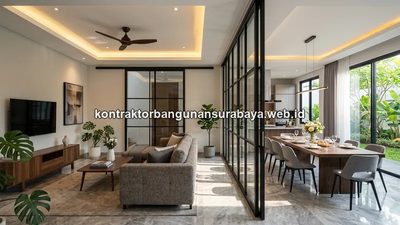

1. Berapa Kisaran Harga Jasa Interior Rumah per Meter Persegi?
Harga jasa interior rumah per meter persegi sangat bervariasi tergantung jenis pekerjaan, mulai dari kitchen set, wardrobe, hingga partisi ruangan, serta spesifikasi material yang dipilih, baik multipleks lapis HPL standar maupun material solid dan panel komposit kelas premium. Panduan dari kontraktorbangunansurabaya.web.id ini membantu menguraikan komponen yang memengaruhi tarif pengerjaan interior secara umum.
Bagi pemilik rumah di Surabaya yang berencana mengerjakan interior, memahami komponen harga adalah kunci untuk menyusun anggaran yang realistis. Harga jasa interior tidak bisa disamakan dengan harga furnitur jadi di toko, karena setiap proyek interior custom memiliki tingkat kesulitan, dimensi ruangan, dan spesifikasi material yang berbeda-beda.
Mengapa Harga Interior Bervariasi?
Harga jasa interior dipengaruhi oleh jenis pekerjaan (kitchen set, wardrobe, partisi, plafon), spesifikasi material (multipleks, HPL, duco, solid wood), ukuran dan kompleksitas desain, serta tingkat kesulitan pemasangan di lokasi proyek.
2. Komponen yang Memengaruhi Tarif Pengerjaan Wardrobe dan Kitchen Set
Tarif pengerjaan furnitur custom umumnya dihitung per meter lari atau per meter persegi bidang panel, tergantung kesepakatan dengan pengrajin atau kontraktor interior, dan biasanya sudah mencakup material utama, aksesoris seperti engsel dan rel laci, serta upah pengerjaan dan pemasangan.
Material Finishing Luar
- HPL (High Pressure Laminate): Lebih ekonomis, tahan lama
- Duco: Hasil halus & rata warna, biaya lebih tinggi
- Tacosheet: Alternatif ekonomis, variasi motif terbatas
Kompleksitas Desain
- Jumlah laci dan rak di dalam wardrobe
- Sekat dan partisi internal
- Detail konstruksi khusus (sudut, lengkung)
- Aksesoris tambahan (lampu LED, cermin)
Pemilihan material finishing luar seperti HPL (High Pressure Laminate), duco, atau tacosheet turut memengaruhi harga akhir, karena masing-masing memiliki tingkat kesulitan pengerjaan dan daya tahan yang berbeda, dengan finishing duco umumnya membutuhkan biaya lebih tinggi dibanding HPL karena proses pengerjaannya yang berlapis dan memakan waktu lebih lama.
Ukuran dan kompleksitas desain furnitur, misalnya jumlah laci, rak, atau sekat di dalam wardrobe, juga turut memengaruhi harga akhir, karena semakin banyak detail konstruksi di dalamnya, semakin banyak pula waktu pengerjaan dan material tambahan yang dibutuhkan.
| Jenis Furnitur | Satuan Umum | Komponen Biaya |
|---|---|---|
| Kitchen Set | Meter lari | Kabinet atas & bawah, countertop, aksesoris, pemasangan |
| Wardrobe | Meter persegi | Panel, pintu, laci, rak, gantungan, aksesoris |
| Meja TV / Backdrop | Meter lari | Panel WPC, rangka, finishing, lampu LED |
| Rak Buku / Partisi | Meter persegi | Multipleks, finishing HPL/duco, pemasangan |
3. Analisis Tarif Partisi Ruangan dan Elemen Interior Lainnya
Partisi ruangan, baik menggunakan gypsum, kaca, maupun panel kayu, memiliki struktur harga yang berbeda tergantung material rangka dan penutup yang digunakan, di mana partisi kaca dengan rangka aluminium umumnya membutuhkan biaya lebih tinggi dibanding partisi gypsum dengan rangka hollow biasa.

| Jenis Partisi | Material Rangka | Material Penutup | Tingkat Biaya |
|---|---|---|---|
| Partisi Gypsum | Hollow biasa | Gypsum board | Ekonomis |
| Partisi Kaca | Aluminium | Kaca tempered | Premium |
| Partisi Panel Kayu | Hollow / kayu | Multipleks + HPL | Menengah |
| Partisi WPC | Hollow | Panel WPC | Menengah |
Biaya pemasangan juga perlu dibedakan dari biaya material, karena tingkat kesulitan pemasangan pada ruangan dengan bentuk tidak beraturan atau langit-langit tinggi umumnya membutuhkan waktu dan tenaga kerja tambahan dibanding pemasangan pada ruangan berbentuk standar.
Selain furnitur dan partisi, elemen interior seperti plafon bertingkat (drop ceiling), lis profil dinding, dan pencahayaan tersembunyi (hidden lamp) juga menjadi komponen yang menambah nilai estetika ruangan sekaligus menambah total anggaran interior secara keseluruhan.
Elemen Interior Penambah Estetika
Elemen seperti drop ceiling dengan hidden lamp, lis profil dinding, dan wall panel memang menambah anggaran, tetapi juga meningkatkan nilai estetika dan kenyamanan ruangan secara signifikan. Diskusikan prioritas elemen mana yang paling penting untuk ruangan Anda.
4. Konsultasi Anggaran Interior yang Transparan di Surabaya
Transparansi harga per item pekerjaan interior membantu pemilik rumah menentukan prioritas, misalnya mendahulukan kitchen set dan wardrobe kamar utama terlebih dahulu, sementara partisi atau furnitur tambahan lain dikerjakan bertahap sesuai ketersediaan anggaran di kemudian hari.
Prioritas Pengerjaan Interior
- Tahap 1: Kitchen set & wardrobe kamar utama
- Tahap 2: Meja TV & backdrop ruang tamu
- Tahap 3: Partisi & furnitur tambahan
- Tahap 4: Elemen dekoratif (lis profil, hidden lamp)
Manfaat Penawaran Transparan
- Rincian per item pekerjaan
- Perbandingan opsi material
- Penyesuaian dengan anggaran
- Fungsi utama ruang tetap terjaga
Tim kontraktorbangunansurabaya.web.id memberikan rincian penawaran per item pekerjaan interior secara terbuka, sehingga pemilik rumah dapat membandingkan opsi material dan menyesuaikan pilihan dengan anggaran yang tersedia tanpa kehilangan fungsi utama ruang yang direncanakan.
Survei Lokasi Tetap Diperlukan
Survei langsung ke lokasi tetap menjadi langkah yang disarankan sebelum menyepakati harga akhir, karena kondisi ruangan aktual, seperti kerataan dinding atau posisi kolom struktur, dapat memengaruhi detail pengerjaan yang tidak selalu terlihat dari gambar desain semata.
Estimasi harga ini akan lebih mudah dipahami apabila dilihat sebagai bagian dari konsep interior secara menyeluruh. Baca panduan lengkap mengenai jasa interior dan finishing rumah untuk memahami tahapan perencanaan interior dari awal hingga akhir.
5. FAQ Seputar Harga Jasa Interior & Finishing di Surabaya
6. Konsultasikan Anggaran Interior Rumah Anda di Surabaya
Ingin mengetahui estimasi biaya interior rumah Anda secara transparan? Diskusikan kebutuhan kitchen set, wardrobe, partisi, dan finishing interior lainnya bersama tim kami yang berpengalaman di Surabaya.
Konsultasi Gratis & Survei LokasiTim Interior & Finishing Kontraktor Bangunan Surabaya
Divisi Desain Interior & Finishing. Berfokus pada perencanaan interior terpadu, estimasi biaya yang transparan, dan pengerjaan furnitur custom berkualitas untuk rumah, ruko, dan kantor di Surabaya dan sekitarnya.